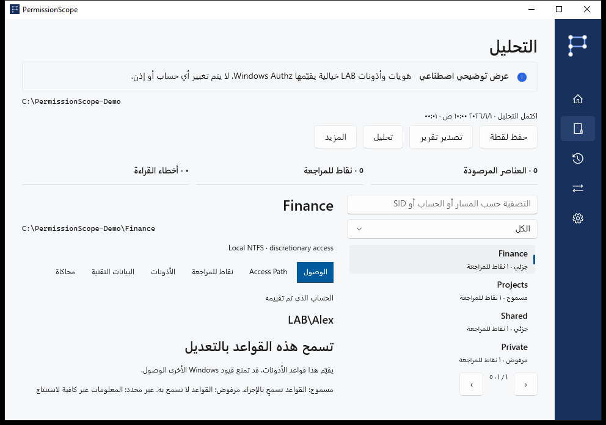

افهم النتيجة
مسموح يتيح الإجراء وفق قواعد الوصول التقديرية التي تم تقييمها. جزئي يتيح بعض الإجراءات. مرفوض لا يمنح وصولًا. غير معروف يعني أن السياق لا يكفي لتأكيد النتيجة؛ ولا يُعامل كمسموح مطلقًا.
PermissionScope · Windows · Apache-2.0
احفظ لقطات محلية، وقارن الملاحظات، وحاكِ إزالة قاعدة في الذاكرة، وصدّر HTML أو CSV أو JSON أو XLSX أو PDF. غياب مورد في ملاحظة لاحقة لا يثبت حذفه.

مسموح يتيح الإجراء وفق قواعد الوصول التقديرية التي تم تقييمها. جزئي يتيح بعض الإجراءات. مرفوض لا يمنح وصولًا. غير معروف يعني أن السياق لا يكفي لتأكيد النتيجة؛ ولا يُعامل كمسموح مطلقًا.
يحسب Windows Authz قناع الأذونات. يعرض Access Path القواعد المساهمة والعضويات المسجلة. علامة التوريث لا تثبت المجلد الأصلي. التحكم الكامل في ACL لا يضمن فتح الملف.
احفظ لقطات محلية، وقارن الملاحظات، وحاكِ إزالة قاعدة في الذاكرة، وصدّر HTML أو CSV أو JSON أو XLSX أو PDF. غياب مورد في ملاحظة لاحقة لا يثبت حذفه.
تظل عمليات الدخول البعيدة وسياقات S4U والقواعد الشرطية وأهداف الروابط غير المتحقق منها غير معروفة. سياسات السلامة والتشفير والأقفال والامتيازات خارج القرار. بلا قياس استخدام أو حساب أو سحابة. قد تتضمن التقارير الحقيقية مسارات وأسماء حساسة.
أرفق الإصدار ونسخة Windows والعملية ورمز الخطأ. تنسخ علامة التبويب التقنية تشخيصًا بلا مسارات أو حسابات أو SID. الترجمات أولية؛ قد تبقى الأدلة التقنية بالإنجليزية. لا ندّعي مراجعة ناطق أصلي أو اعتماد تقنيات مساعدة.
التحليل والمحاكاة للقراءة فقط. تطبيق التغيير مسار منفصل بتأكيد صريح، للملفات المحلية العادية، مع لقطة وسجل دائم وتحقق وتراجع. المجلدات والروابط والملفات ذات الروابط الصلبة المتعددة مستثناة.
دليل مرئي →Windows 10 1809 أو أحدث. تتضمن الحزم الكاملة بيئات التشغيل. المثبّتات غير موقّعة حاليًا؛ تحقق من SHA-256. يُبنى ARM64 في CI دون اعتماد على جهاز ARM فعلي. راجع حالة الإصدار لتوفر Store وWinGet.